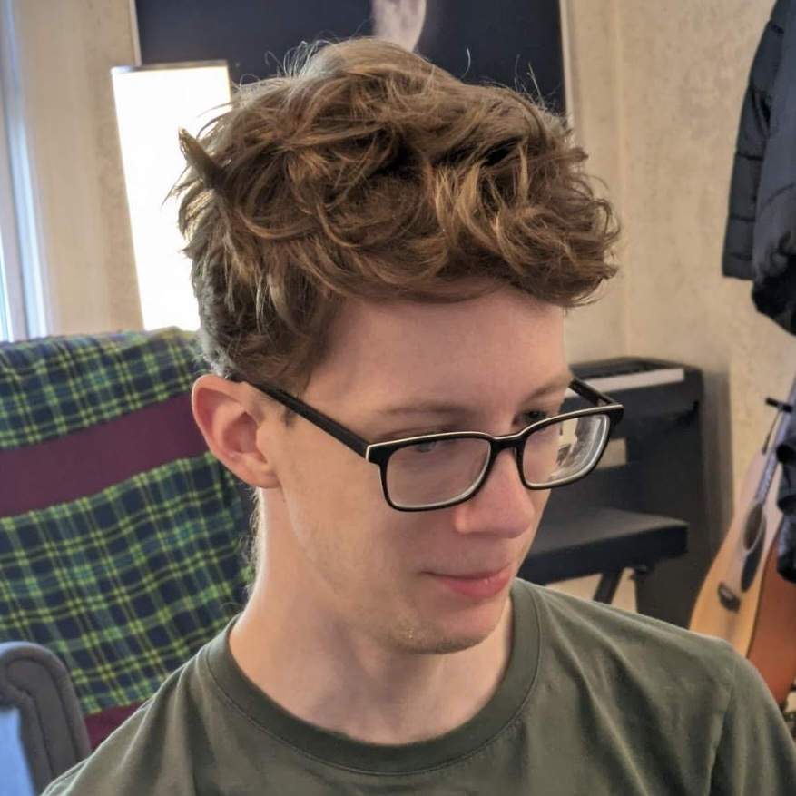

Sam Estep
Hi! 👋 I'm Sam (he/him). I'm a PhD student in S3D at CMU, co-advised by Joshua Sunshine and Keenan Crane. I work on Penrose.
Publications
- Gradual Program Analysis for Null Pointers, in ECOOP 2021, by Sam Estep, Jenna DiVincenzo, Jonathan Aldrich, Éric Tanter, Johannes Bader, and Joshua Sunshine.
Blog
- 2021-02-20 Parallelizing nvcc